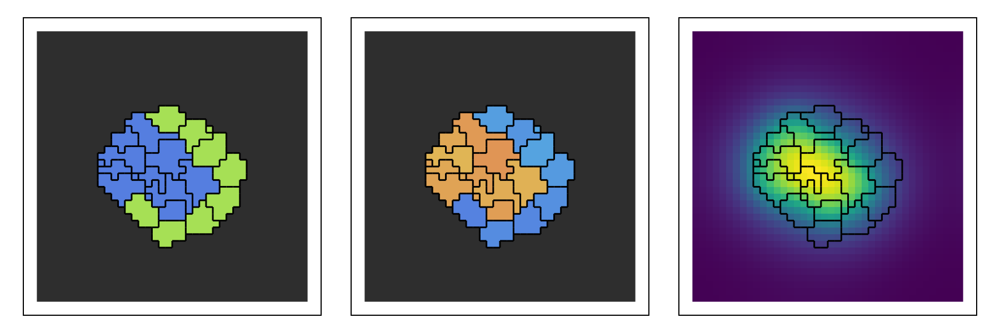

Plotting and videos
MakiePotts draws Potts states with Makie. Load it with a Makie backend: CairoMakie for files and notebooks, GLMakie for interactive windows.
| Function | Does |
|---|---|
renderframe(u) | a picture of a saved state u |
renderframe(sol; index = i) | the i-th saved state of a solution (default: the last), with its frozen obstacles |
renderframes(sol) | every saved state |
pottsplot(frame), pottsplot!(ax, frame) | draw a frame (a Makie recipe) |
record_potts(file, sol) | a video of every saved state of a solution (or of a vector of frames) |
potts_legend(position, plot) | a legend of the kinds |
pottsplot attributes: encoding (CellTypeEncoding(), the default, colours by kind; CellIdentityEncoding() by cell; ChannelEncoding(key) by a channel), boundaries = true (cell outlines), medium_color, obstacle_color, colormap, category_palette.
using Potts, MakiePotts, CairoMakie
@potts_model Mix begin
@kinds medium dark light
@parameters J[kind, kind] = [0 16 16; 16 2 11; 16 11 14]
@variables c(field) = 0.0
@lattice Lattice((40, 40); neighborhood = Moore(1))
@energy begin
Volume(dark, light; target = 25.0, strength = 1.0)
contacts => J[kind, kind′]
end
@equations D(c) ~ 0.2 * Δ(c) + 0.05 * (kind == dark) - 0.01 * c
@sweep Metropolis(; temperature = 10.0)
end
@named mix = Mix()
op = layout(Tiling((5, 5); region = (11:30, 11:30), kinds = [:dark, :light]), mix)
sol = solve(PottsProblem(mix, op, (0, 300); field_solver = ExplicitEuler(substeps = 2), seed = 1),
SequentialCPM(); saveat = 10)
u = sol.u[end]
key = SiteChannelKey(:c, Float64)
frame = renderframe(u; channels = (RenderChannel(key, u.site.c; label = "c"),))
fig = Figure(size = (900, 300))
for (i, enc) in enumerate((CellTypeEncoding(), CellIdentityEncoding(), ChannelEncoding(key)))
ax = Axis(fig[1, i]; aspect = DataAspect())
hidedecorations!(ax)
pottsplot!(ax, frame; encoding = enc, boundaries = true)
end
fig
Videos
record_potts(file, sol; framerate, title, figure, axis, plot, encoding) writes one frame per saved state; save every k MCS with saveat to control the length. figure, axis and plot are named tuples passed to the Makie figure, axis and pottsplot. To record a field, pass a vector of frames with channels, as in Tutorial 2.
record_potts("plotting_mix.mp4", sol; framerate = 10, title = "Mix", plot = (; boundaries = true),
figure = (; size = (300, 300)))3D states are drawn as 2D slices: renderframe(u, RenderRequest(; extent = OrthogonalSlice(3, k))) is the plane z = k.